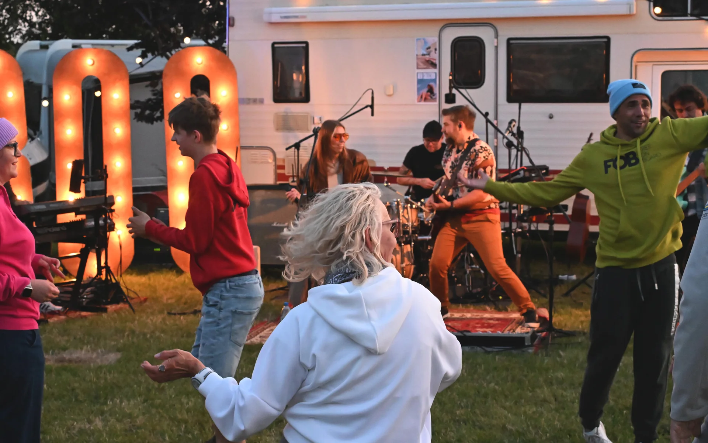
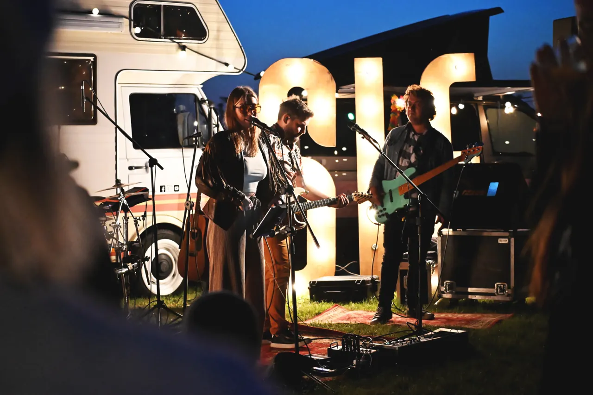

4 IKONKI CAŁY OŚRODEK DLA LONGWAVE
Przez cztery dni WIND4YOU jest tylko dla naszej ekipy.

Łączymy pokolenia. I robimy to po swojemu!
Przed nami już 7. edycja naszego wyjątkowego spotkania! Cztery dni nad jeziorem, w otoczeniu natury, z ekstra ludźmi i mnóstwem wspólnych aktywności.
Raz w roku rezerwujemy cały ośrodek WIND4YOU tylko dla naszej ekipy. Zapraszamy rodziny, przyjaciół, znajomych, rodziców i dziadków.
Możecie przyjechać kamperem, z przyczepą, pod namiot lub wybrać nocleg w domku z łazienką.
Windsurfing, SUP-y, joga, kreatywne warsztaty, wspólne ogniska, koncert na żywo i poznawanie nowych ciekawych ludzi.
Każdy znajdzie coś dla siebie, a przede wszystkim… znajdziecie czas na bycie RAZEM.
Ekstra ludzie, piękna natura, muzyka, sport i klimat, który trudno opisać, ale na pewno go wyczujesz!
Przez cztery dni WIND4YOU jest tylko dla naszej ekipy.
Dzieci, rodzice, dziadkowie, przyjaciele. Tutaj wiek nie ma znaczenia!
Wodne aktywności, joga, warsztaty i czas na relaks.
Koncert na żywo, ogniska i niepowtarzalna atmosfera.
To jeden z naszych najbardziej wyjątkowych projektów. Bez podziałów na wiek, bez kategorii i bez sztywnego planu, w którym każdy musi robić to samo.
Chcemy, żeby dzieci mogły próbować nowych sportów, dorośli znaleźli chwilę dla siebie, a wszyscy mieli okazję spędzić razem naprawdę fajny czas.
W programie znajdziecie windsurfing, wingfoil (możliwość dla chętnych) , SUP-y, kajaki, jogę, zajęcia sportowe, kreatywne warsztaty i spotkania pełne inspiracji. Dla najmłodszych przygotowujemy gry i zabawy, a dla starszych również trochę relaksu, muzyki i wieczornych atrakcji.
Możecie spędzić cały dzień aktywnie albo rozłożyć koc nad jeziorem i po prostu nacieszyć się chwilą.
Bierzcie dzieci, rodziców, dziadków, wujków i przyjaciół. W LONGWAVE jest miejsce dla każdego!

Tylko raz w roku mamy taką okazję - cały WIND4YOU na wyłączność LONGWAVE!
Spotykamy się nad Jeziorem Bukowo, w otoczeniu zieleni i z dużą przestrzenią do wspólnego spędzania czasu.
Na miejscu znajduje się baza sportów wodnych, boiska, strefy rekreacyjne i przestrzeń na wieczorne spotkania.
A nocleg? Tak, jak lubicie najbardziej:
Niezależnie od tego, jak nocujecie, wszyscy jesteśmy częścią jednej ekipy.
Lokalizacja: WIND4YOU, Gleźnowo 57, 76-156 Dąbki.

Kadry LONGWAVE




Nie trzeba być sportowcem ani mieć doświadczenia na wodzie. Każdy może spróbować czegoś nowego i wybrać aktywności dopasowane do siebie.
Program poszczególnych aktywności dopasowujemy do pogody, warunków na wodzie i harmonogramu wydarzenia.
Od 0 do 100 lat! A nawet więcej.
Dla rodzin z dziećmi, par, paczek znajomych, rodziców, dziadków i wszystkich, którzy chcą rozpocząć sezon w dobrym towarzystwie.
Nie ma znaczenia, czy pierwszy raz stajesz na desce, czy sporty wodne to Twoja codzienność.
Przygotowujemy aktywności na różnym poziomie zaawansowania.
Nie musisz przyjeżdżać z rodziną. Wystarczy, że masz ochotę spędzić z miło te cztery dni, na miejscu poznasz mnóstwo życzliwych ludzi!
Stawiamy na swobodną atmosferę, różnorodny program i przestrzeń do wspólnego spędzania czasu.
Wspólne posiłki to też ważna część naszego festiwalu (zobaczycie, będzie to mini THROWBACK)
Możecie wybrać pobyt z wyżywieniem lub bez, w zależności od tego, jak lubicie spędzać czas.
W pakiecie z wyżywieniem zapewniamy trzy posiłki dziennie: śniadanie, obiad i kolację.
Menu jest urozmaicone - pojawiają się m.in. domowe hummusy, zapiekanki, sałatki, dipy i nasze ulubione placki z cukinii.
Dostępna jest także opcja diety wegetariańskiej za dodatkową opłatą
Dzieci do lat 3 — GRATIS!
Każdy pakiet obejmuje udział w pełnym programie oraz wszystkie walory festiwalu. Wybieracie tylko sposób noclegu i opcję wyżywienia.
Poranna joga nad jeziorem dla chętnych.
Kawa, rozmowy i spokojny początek dnia.
Windsurfing, SUP-y, kajaki i zajęcia dla uczestników na różnych poziomach.
Zajęcia kreatywne dla najmłodszych, sport i spotkania dla starszych.
Czas dla rodziny, przyjaciół albo po prostu dla siebie.
Rowery, gry zespołowe, warsztaty DIY, pierwsza pomoc lub kolejna dawka sportów wodnych.
Wspólne integracje, turnieje, rozmowy i chwila luzu nad jeziorem.
Spotykamy się przy wspólnym stole.
Koncert na żywo, muzyka, ognisko, degustacja win dla dorosłych lub wspólne tańce.
To przykładowy dzień. Nie wszystkie atrakcje odbywają się codziennie. Posiłki są zapewnione w ramach pakietów z wyżywieniem.
Możesz przyjechać z całą rodziną, ze znajomymi albo w pojedynkę. Przywieźć kampera, rozbić namiot lub zamieszkać w domku.
Rano wskoczyć na deskę, po południu wziąć udział w warsztatach, a wieczorem usiąść razem przy muzyce.
Nie chodzi o to, żeby zdążyć na wszystkie atrakcje. Chodzi o te cztery dni, które możemy spędzić aktywnie, swobodnie w otoczeniu życzliwych ludzi i natury.
ŁĄCZYMY POKOLENIA. JUŻ PO RAZ SIÓDMY!
Twój kolejny wyjazd
Zapisy odbywają się w aplikacji LONGWAVE. Przy aktywnym terminie przejdziesz bezpośrednio do oferty.
Przy zapowiedziach zapisy nie są jeszcze otwarte.
Porozmawiajmy o Twoim wyjeździe
Opowiedz nam, co planujesz. Pomożemy dobrać wyjazd, termin lub program dla Twojej grupy.